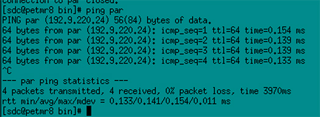
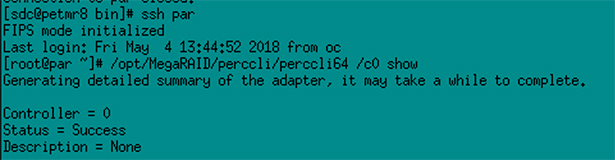
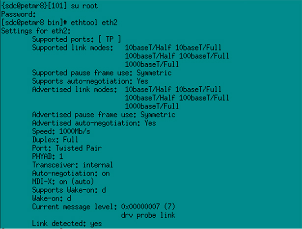
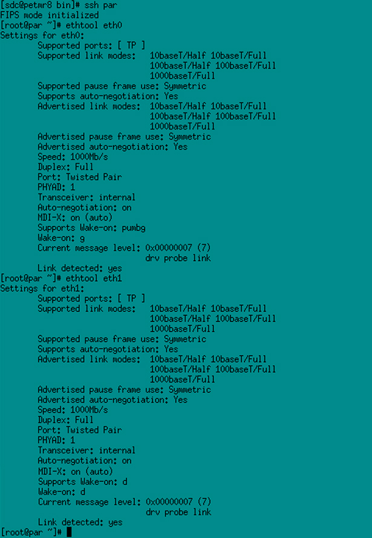

- 00000018WIA3017E230GYZ
- id_161402031.13
- Jun 10, 2025, 2:52:46 PM
Advanced SPiCE (PARC) troubleshooting
Troubleshoot PARC configuration failures and SRM errors.
Refer to the following sections to troubleshoot conditions with the SPiCE (PARC).
Configuring PARC fails
If the PARC configuration fails on MP24 (Load PARC Z820), enter tail -100 /usr/local/bin/install/log/install_parc_os.trace to identify the cause.
Failed during power-on PARC (controlPower step failed) (MP24 only)
The PARC Bios (AMT) is not configured. Do the following steps.
- Connect a monitor and keyboard to the PARC. If necessary, bring the PARC to the GOC.
- Boot the PARC manually.
- Press Ctrl + P to enter setup mode.
- Configure the following settings.
- Intel ME Password: admin2GE.com (if password is set to admin, it must be changed)
- Intel AMT Configuration > Manageability Feature Selection - Enabled
- Network Setup > TCP/IP Settings > Wired LAN IPv4 Settings > DHCP Mode - Disabled
- IPV4 Address - 192.9.220.24
- Subnet Mask - 255.255.255.0
- Intel AMT Configuration > Network Setup > Activate Network Access - Y
Failed during controlPower step (power-up timed out) (MP24 only)
PARC BIOS [re]set is not booting PXE. Do the following steps.
- Connect monitor and keyboard to PARC. If necessary, bring PARC to GOC.
- Boot PARC to BIOS setup (F10).
- Change Boot settings to AMT NIC first.
Failed when extracting OS image
The media is bad.
Failed due to unable to reach SPiCE (PARC)
SPiCE (PARC) is not present or Host not upgraded with dual-port NIC. Make sure that SPiCE (PARC) is correctly installed into the PET cabinet. Use ping par command.

Failed during SetupRaid step or SetupRawFs step
Bad or missing drives. Do a check of the drive status using the following:
(For MP24) Open rsh par as root. Enter sas2ircu 0 display. Expect four drives with “ready, good, or unconfigured good” status.
(For MP26 or later) Open ssh par as root. Enter /opt/MegaRAID/perccli/perccli64 /c0 show. Or open PHV, go to iDRAC, and look at Storage in the tree. Expect eight drives.

Hanging on ‘mv /petLists /petLists.saved’ or ‘mv /petRDFS /petRDFS.saved’
Software error has occurred from repeated installation. Do the following steps.
- Log on as root. Enter pkill -f installParc to cancel the current load.
- Enter rm -rf /pet*.saved to remove two files.
- Retry to configure SPiCE (PARC).
Failed during controlPower step (timed out power-up SPiCE (PARC), applies to MP26 with T630 PARC)
Identify by opening the console via iDRAC in SPiCE (PARC) Health Viewer via the Common Service Desktop (CSD).
The SPiCE (PARC) BIOS is set to UEFI mode.
Failed during controlPower power-up SPiCE (PARC)
Failure is due to fan failure, memory error, or CPU error. Connect keyboard and monitor and check if the system shows a boot message.
Try reseating the fan connections in the SPiCE (PARC). If CPU or memory problems, replace the SPiCE (PARC).
SRM not green
SRM red – acquisition software error
For MP24 only, RPM for perl-Date-Manip is not loaded.
Enter rpm -qa | grep perl-Date. The system should respond with perl-Date-Manip-5.54-2.46. If no output, do the following steps.
- Enter su - to switch to root.
- Load the OS media.
- Enter command mount /mnt/cdrom.
- Enter rpm -ivh /mnt/cdrom/suse/x86_64/perl-Date-Manip-5.54-2.46.x86_64.rpm.
- No restart should be needed for SRM to recover.
SRM red – COIN link down between SPiCE (PARC) and PROP
An incorrect SFP is in the PROP COIN slot. Visually inspect the PROP SFP. You cannot ping PROP-side COIN (192.168.10.1) from SPiCE (PARC).
Replace with correct 10 GB SFP. The SPiCE (PARC) COIN NIC may have an extra 10 GB SFP.
30-second delay starting MR exam, scan won’t start
Unable to communicate with PET system. Limited to MR scanning only. For MP26M3+, SRM red indicates acquisition software error.
See if the Host IP address is configured on PET subnet (192.9.220.x or 192.168.11.x). Change the Host IP address if necessary. This is best accomplished during load from cold procedure.
SRM acq/recon yellow – hardware error
This is caused by link speed, with a bad cable between SPiCE (PARC), PET switch, or PROP. Do the following checks. Link speeds should all show 1000 Mbps.
At the Host, check GOC-PET. As root, enter ethtool eth2.

(For MP24) With par, rash par as root, enter ethtool eth0, ethtool eth1.
(For MP26 and later) With ssh par as root, enter ethtool eth0, ethtool eth1.

SRM red – SPiCE (PARC) hardware error
For MP26 and later, the ssh keys have been modified (by customer).
Do a check using ssh par (also ssh par as root). The system should respond with password-less connection.
As root, run /usr/PET/parc/common/scripts/setupSshAuth.
SRM yellow – RAID sync
For MP24, this is a normal event. It can take up to 12 hours for this to clear. Do not reboot. Continue with PET calibration. Performance is only restricted.
Progress can be observed in the PARC Health Viewer in CSD.
Miscellaneous
Manual power-on/power-off
- Enter sdc> sudo service parc3power stop. The SPiCE (PARC) should power off within 30 seconds. If not, hold the power button to switch the SPiCE (PARC) off.
- Enter sdc> sudo service parc3power start. After 5 minutes, the SRM should be green.
- If the SRM is not green after 5 minutes, restart the PET apps on the SPiCE (PARC):
- Enter sdc> setenv CONFIGDIR /usr/g/config.
- Enter sdc> cupShutdown start pet_acq.
- Enter sdc> cupShutdown start pet_recon.
Cables misconnected
Using par, enter ethtool eth0, ethtool eth1, ethtool eth2.
All links should be detected.